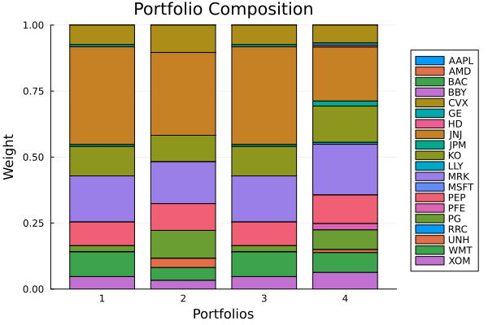

The source files can be found in examples/.
Meta-optimisers
Every optimiser so far produces weights by solving one problem. Meta-optimisers instead orchestrate other optimisers: they split the problem up, solve the pieces with whatever estimator you like, and recombine the results. They are the package's answer to two practical worries — estimation error (a single fit on all assets is fragile) and modularity (you may want different rules for different parts of the universe).
PortfolioOptimisers provides three, all sharing the same inner/outer composition idea:
NestedClustered(NCO) — cluster the assets, run an inner optimiser inside each cluster, then an outer optimiser across the cluster aggregates.Stacking— run several inner optimisers on the full universe, then stack their portfolios together with an outer optimiser (an ensemble).SubsetResampling— repeatedly optimise on random subsets of the assets and average the resampled weights, à la bagging.
Because the inner and outer slots accept any optimisation estimator (including other meta-optimisers), these compose arbitrarily.
Reach for a meta-optimiser when a single global fit feels too fragile or too monolithic: NCO when you trust the cluster structure and want a different rule within vs across groups, Stacking when you want to hedge model risk by ensembling several optimisers, and SubsetResampling when you want bagging-style robustness against the specific asset set and estimation noise. If a single optimiser already does what you need, prefer it — these add compute and configuration surface in exchange for robustness.
using PortfolioOptimisers, PrettyTables, StableRNGsresfmt = (v, i, j) -> begin if j == 1 return v else return isa(v, Number) ? "$(round(v*100, digits=3)) %" : v endend;1. ReturnsResult data and shared ingredients
We use the same S&P 500 slice as the other optimiser examples, and precompute a prior, a clustering, and a solver to share across the meta-optimisers.
using CSV, TimeSeries, DataFrames, ClarabelX = TimeArray(CSV.File(joinpath(@__DIR__, "..", "SP500.csv.gz")); timestamp = :Date)[(end - 252):end]rd = prices_to_returns(X)slv = Solver(; name = :clarabel1, solver = Clarabel.Optimizer, settings = Dict("verbose" => false), check_sol = (; allow_local = true, allow_almost = true))pr = prior(EmpiricalPrior(), rd)clr = clusterise(ClustersEstimator(; alg = DBHT()), pr.X)Clusters
res ┼ Clustering.Hclust{Float64}([-1 -13; -7 -4; … ; 12 17; 10 18], [0.1, 0.1111111111111111, 0.125, 0.14285714285714285, 0.16666666666666666, 0.2, 0.25, 0.3333333333333333, 0.5, 1.0, 0.125, 0.14285714285714285, 0.16666666666666666, 0.2, 0.25, 0.3333333333333333, 0.5, 1.0, 2.0], [5, 20, 17, 3, 9, 6, 2, 1, 13, 7, 4, 19, 14, 10, 16, 18, 11, 8, 12, 15], :DBHT)
S ┼ 20×20 Matrix{Float64}
D ┼ 20×20 Matrix{Float64}
P ┼ nothing
k ┴ Int64: 4
A recurring pattern below illustrates the precomputed-result vs estimator distinction (see the MeanRisk objectives note). The inner optimiser is given the precomputed prior through its JuMPOptimiser (pe = pr) — fine, because the inner solves run on the real asset returns. The outer optimiser is deliberately not given a prior: it operates on the synthetic per-cluster (or stacked) returns the meta-optimiser builds internally, where a precomputed asset-level prior would be meaningless. The outer slot is an estimator-driven slot — it recomputes whatever statistics it needs from those synthetic returns at solve time, so here it only needs a solver. (Passing pe = pr to the outer optimiser would silently feed it the wrong, asset-level prior.)
jopti = JuMPOptimiser(; pe = pr, slv = slv)jopto = JuMPOptimiser(; slv = slv)JuMPOptimiser
pe ┼ EmpiricalPrior
│ ce ┼ PortfolioOptimisersCovariance
│ │ ce ┼ Covariance
│ │ │ me ┼ SimpleExpectedReturns
│ │ │ │ w ┴ nothing
│ │ │ ce ┼ GeneralCovariance
│ │ │ │ ce ┼ SimpleCovariance: SimpleCovariance(true)
│ │ │ │ w ┴ nothing
│ │ │ alg ┼ FullMoment()
│ │ │ w ┴ nothing
│ │ mp ┼ MatrixProcessing
│ │ │ pdm ┼ Posdef
│ │ │ │ alg ┼ UnionAll: NearestCorrelationMatrix.Newton
│ │ │ │ kwargs ┴ @NamedTuple{}: NamedTuple()
│ │ │ dn ┼ nothing
│ │ │ dt ┼ nothing
│ │ │ alg ┼ nothing
│ │ │ order ┴ NTuple{4, Symbol}: (:pdm, :dn, :dt, :alg)
│ me ┼ SimpleExpectedReturns
│ │ w ┴ nothing
│ horizon ┼ nothing
│ fill_limit ┴ nothing
slv ┼ Solver
│ name ┼ Symbol: :clarabel1
│ solver ┼ UnionAll: Clarabel.MOIwrapper.Optimizer
│ settings ┼ Dict{String, Bool}: Dict{String, Bool}("verbose" => 0)
│ check_sol ┼ @NamedTuple{allow_local::Bool, allow_almost::Bool}: (allow_local = true, allow_almost = true)
│ add_bridges ┴ Bool: true
wb ┼ WeightBounds
│ lb ┼ Float64: 0.0
│ ub ┴ Float64: 1.0
bgt ┼ Float64: 1.0
sbgt ┼ nothing
gbgt ┼ nothing
xbgt ┼ Bool: false
lt ┼ nothing
st ┼ nothing
lcse ┼ nothing
cte ┼ nothing
gcarde ┼ nothing
sgcarde ┼ nothing
smtx ┼ nothing
sgmtx ┼ nothing
slt ┼ nothing
sst ┼ nothing
sglt ┼ nothing
sgst ┼ nothing
tn ┼ nothing
fees ┼ nothing
sets ┼ nothing
tr ┼ nothing
ple ┼ nothing
ret ┼ ArithmeticReturn
│ settings ┼ JuMPReturnsSettings
│ │ scale ┼ Float64: 1.0
│ │ lb ┼ nothing
│ │ rte ┼ Bool: true
│ │ fee ┼ Bool: true
│ │ mic ┴ Bool: true
│ ucs ┼ nothing
│ mu ┴ nothing
sca ┼ SumScalariser()
ccnt ┼ nothing
cobj ┼ nothing
sc ┼ Int64: 1
so ┼ Int64: 1
ss ┼ nothing
card ┼ nothing
scard ┼ nothing
l2c ┼ nothing
lpc ┼ nothing
linfc ┼ nothing
l1 ┼ nothing
l2 ┼ nothing
lp ┼ nothing
linf ┼ nothing
brt ┼ Bool: false
x_src ┼ Symbol: :prior
strict ┴ Bool: false
For a reference point we also compute a plain minimum-variance MeanRisk over the whole universe.
res_bench = optimise(MeanRisk(; obj = MinimumRisk(), opt = JuMPOptimiser(; pe = pr, slv = slv)))MeanRiskResult
jr ┼ JuMPOptimisationResult
│ pa ┼ ProcessedJuMPOptimiserAttributes
│ │ pr ┼ LowOrderPrior
│ │ │ X ┼ 252×20 Matrix{Float64}
│ │ │ o_X ┼ nothing
│ │ │ mu ┼ 20-element Vector{Float64}
│ │ │ sigma ┼ 20×20 Matrix{Float64}
│ │ │ chol ┼ nothing
│ │ │ w ┼ nothing
│ │ │ ens ┼ nothing
│ │ │ kld ┼ nothing
│ │ │ ow ┼ nothing
│ │ │ rr ┼ nothing
│ │ │ fpr ┴ nothing
│ │ wb ┼ WeightBounds
│ │ │ lb ┼ 20-element StepRangeLen{Float64, Base.TwicePrecision{Float64}, Base.TwicePrecision{Float64}, Int64}
│ │ │ ub ┴ 20-element StepRangeLen{Float64, Base.TwicePrecision{Float64}, Base.TwicePrecision{Float64}, Int64}
│ │ lt ┼ nothing
│ │ st ┼ nothing
│ │ lcsr ┼ nothing
│ │ ctr ┼ nothing
│ │ gcardr ┼ nothing
│ │ sgcardr ┼ nothing
│ │ smtx ┼ nothing
│ │ sgmtx ┼ nothing
│ │ slt ┼ nothing
│ │ sst ┼ nothing
│ │ sglt ┼ nothing
│ │ sgst ┼ nothing
│ │ tn ┼ nothing
│ │ fees ┼ nothing
│ │ plr ┼ nothing
│ │ ret ┼ ArithmeticReturn
│ │ │ settings ┼ JuMPReturnsSettings
│ │ │ │ scale ┼ Float64: 1.0
│ │ │ │ lb ┼ nothing
│ │ │ │ rte ┼ Bool: true
│ │ │ │ fee ┼ Bool: true
│ │ │ │ mic ┴ Bool: true
│ │ │ ucs ┼ nothing
│ │ │ mu ┴ 20-element Vector{Float64}
│ │ sca ┼ SumScalariser()
│ │ imsk ┴ nothing
│ retcode ┼ OptimisationSuccess
│ │ res ┴ Dict{Any, Any}: Dict{Any, Any}()
│ sol ┼ JuMPOptimisationSolution
│ │ w ┴ 20-element Vector{Float64}
│ model ┼ A JuMP Model
│ │ ├ solver: Clarabel
│ │ ├ objective_sense: MIN_SENSE
│ │ │ └ objective_function_type: QuadExpr
│ │ ├ num_variables: 21
│ │ ├ num_constraints: 4
│ │ │ ├ AffExpr in MOI.EqualTo{Float64}: 1
│ │ │ ├ Vector{AffExpr} in MOI.Nonnegatives: 1
│ │ │ ├ Vector{AffExpr} in MOI.Nonpositives: 1
│ │ │ └ Vector{AffExpr} in MOI.SecondOrderCone: 1
│ │ └ Names registered in the model
│ │ └ :G, :T, :bgt, :cdev_soc_1, :dev_1, :k, :lw, :obj_expr, :ret, :ret_1, :ret_vec, :risk, :risk_vec, :sc, :so, :variance_flag, :variance_risk_1, :w, :w_lb, :w_ub
r ┼ Variance
│ settings ┼ RiskMeasureSettings
│ │ scale ┼ Float64: 1.0
│ │ ub ┼ nothing
│ │ rke ┴ Bool: true
│ sigma ┼ 20×20 Matrix{Float64}
│ chol ┼ nothing
│ rc ┼ nothing
│ alg ┴ SquaredSOCRiskExpr()
fb ┴ nothing
2. Nested clustered optimisation (NCO)
NCO solves a minimum-variance problem inside each cluster, collapses each cluster to a single synthetic asset, then solves a second minimum-variance problem across the clusters. The inner and outer optimisers are independent — here both are MeanRisk, but either could be a risk-budgeting, hierarchical, or naive estimator.
res_nco = optimise(NestedClustered(; pe = pr, cle = clr, opti = MeanRisk(; obj = MinimumRisk(), opt = jopti), opto = MeanRisk(; obj = MinimumRisk(), opt = jopto)), rd)NestedClusteredResult
pr ┼ LowOrderPrior
│ X ┼ 252×20 Matrix{Float64}
│ o_X ┼ nothing
│ mu ┼ 20-element Vector{Float64}
│ sigma ┼ 20×20 Matrix{Float64}
│ chol ┼ nothing
│ w ┼ nothing
│ ens ┼ nothing
│ kld ┼ nothing
│ ow ┼ nothing
│ rr ┼ nothing
│ fpr ┴ nothing
clr ┼ Clusters
│ res ┼ Clustering.Hclust{Float64}([-1 -13; -7 -4; … ; 12 17; 10 18], [0.1, 0.1111111111111111, 0.125, 0.14285714285714285, 0.16666666666666666, 0.2, 0.25, 0.3333333333333333, 0.5, 1.0, 0.125, 0.14285714285714285, 0.16666666666666666, 0.2, 0.25, 0.3333333333333333, 0.5, 1.0, 2.0], [5, 20, 17, 3, 9, 6, 2, 1, 13, 7, 4, 19, 14, 10, 16, 18, 11, 8, 12, 15], :DBHT)
│ S ┼ 20×20 Matrix{Float64}
│ D ┼ 20×20 Matrix{Float64}
│ P ┼ nothing
│ k ┴ Int64: 4
wb ┼ WeightBounds
│ lb ┼ 20-element Vector{Float64}
│ ub ┴ 20-element Vector{Float64}
fees ┼ nothing
resi ┼ 4-element Vector{MeanRiskResult}
│ MeanRiskResult ⋯
│ MeanRiskResult ⋯
│ MeanRiskResult ⋯
│ MeanRiskResult ⋯
reso ┼ MeanRiskResult
│ jr ┼ JuMPOptimisationResult
│ │ pa ┼ ProcessedJuMPOptimiserAttributes
│ │ │ pr ┼ LowOrderPrior
│ │ │ │ X ┼ 252×4 Matrix{Float64}
│ │ │ │ o_X ┼ nothing
│ │ │ │ mu ┼ Vector{Float64}: [-0.0005703954772857469, 0.0021114548119633187, 0.0005954569768867563, 0.0003887564267948162]
│ │ │ │ sigma ┼ 4×4 Matrix{Float64}
│ │ │ │ chol ┼ nothing
│ │ │ │ w ┼ nothing
│ │ │ │ ens ┼ nothing
│ │ │ │ kld ┼ nothing
│ │ │ │ ow ┼ nothing
│ │ │ │ rr ┼ nothing
│ │ │ │ fpr ┴ nothing
│ │ │ wb ┼ WeightBounds
│ │ │ │ lb ┼ StepRangeLen{Float64, Base.TwicePrecision{Float64}, Base.TwicePrecision{Float64}, Int64}: StepRangeLen(0.0, 0.0, 4)
│ │ │ │ ub ┴ StepRangeLen{Float64, Base.TwicePrecision{Float64}, Base.TwicePrecision{Float64}, Int64}: StepRangeLen(1.0, 0.0, 4)
│ │ │ lt ┼ nothing
│ │ │ st ┼ nothing
│ │ │ lcsr ┼ nothing
│ │ │ ctr ┼ nothing
│ │ │ gcardr ┼ nothing
│ │ │ sgcardr ┼ nothing
│ │ │ smtx ┼ nothing
│ │ │ sgmtx ┼ nothing
│ │ │ slt ┼ nothing
│ │ │ sst ┼ nothing
│ │ │ sglt ┼ nothing
│ │ │ sgst ┼ nothing
│ │ │ tn ┼ nothing
│ │ │ fees ┼ nothing
│ │ │ plr ┼ nothing
│ │ │ ret ┼ ArithmeticReturn
│ │ │ │ settings ┼ JuMPReturnsSettings
│ │ │ │ │ scale ┼ Float64: 1.0
│ │ │ │ │ lb ┼ nothing
│ │ │ │ │ rte ┼ Bool: true
│ │ │ │ │ fee ┼ Bool: true
│ │ │ │ │ mic ┴ Bool: true
│ │ │ │ ucs ┼ nothing
│ │ │ │ mu ┴ Vector{Float64}: [-0.0005703954772857469, 0.0021114548119633187, 0.0005954569768867563, 0.0003887564267948162]
│ │ │ sca ┼ SumScalariser()
│ │ │ imsk ┴ nothing
│ │ retcode ┼ OptimisationSuccess
│ │ │ res ┴ Dict{Any, Any}: Dict{Any, Any}()
│ │ sol ┼ JuMPOptimisationSolution
│ │ │ w ┴ Vector{Float64}: [7.224724120183358e-7, 0.1366078644652344, 0.6133269234160328, 0.2500644896463209]
│ │ model ┼ A JuMP Model
│ │ │ ├ solver: Clarabel
│ │ │ ├ objective_sense: MIN_SENSE
│ │ │ │ └ objective_function_type: QuadExpr
│ │ │ ├ num_variables: 5
│ │ │ ├ num_constraints: 4
│ │ │ │ ├ AffExpr in MOI.EqualTo{Float64}: 1
│ │ │ │ ├ Vector{AffExpr} in MOI.Nonnegatives: 1
│ │ │ │ ├ Vector{AffExpr} in MOI.Nonpositives: 1
│ │ │ │ └ Vector{AffExpr} in MOI.SecondOrderCone: 1
│ │ │ └ Names registered in the model
│ │ │ └ :G, :T, :bgt, :cdev_soc_1, :dev_1, :k, :lw, :obj_expr, :ret, :ret_1, :ret_vec, :risk, :risk_vec, :sc, :so, :variance_flag, :variance_risk_1, :w, :w_lb, :w_ub
│ r ┼ Variance
│ │ settings ┼ RiskMeasureSettings
│ │ │ scale ┼ Float64: 1.0
│ │ │ ub ┼ nothing
│ │ │ rke ┴ Bool: true
│ │ sigma ┼ 4×4 Matrix{Float64}
│ │ chol ┼ nothing
│ │ rc ┼ nothing
│ │ alg ┴ SquaredSOCRiskExpr()
│ fb ┴ nothing
cv ┼ nothing
retcode ┼ OptimisationSuccess
│ res ┴ nothing
w ┼ 20-element Vector{Float64}
imsk ┼ nothing
fb ┴ nothing
3. Stacking
Stacking runs a list of inner optimisers on the full universe — here a min-variance MeanRisk, a HierarchicalRiskParity, and a naive InverseVolatility — then combines their portfolios with an outer optimiser. The result is an ensemble that hedges the model risk of any single rule.
res_stk = optimise(Stacking(; pe = pr, opti = [MeanRisk(; opt = jopti), HierarchicalRiskParity(; opt = HierarchicalOptimiser(; pe = pr)), InverseVolatility(; pe = pr)], opto = MeanRisk(; obj = MinimumRisk(), opt = jopto)), rd)StackingResult
pr ┼ LowOrderPrior
│ X ┼ 252×20 Matrix{Float64}
│ o_X ┼ nothing
│ mu ┼ 20-element Vector{Float64}
│ sigma ┼ 20×20 Matrix{Float64}
│ chol ┼ nothing
│ w ┼ nothing
│ ens ┼ nothing
│ kld ┼ nothing
│ ow ┼ nothing
│ rr ┼ nothing
│ fpr ┴ nothing
wb ┼ WeightBounds
│ lb ┼ 20-element Vector{Float64}
│ ub ┴ 20-element Vector{Float64}
fees ┼ nothing
resi ┼ 3-element Vector{NonFiniteAllocationOptimisationResult}
│ MeanRiskResult ⋯
│ HierarchicalRiskParityResult ⋯
│ NaiveOptimisationResult ⋯
reso ┼ MeanRiskResult
│ jr ┼ JuMPOptimisationResult
│ │ pa ┼ ProcessedJuMPOptimiserAttributes
│ │ │ pr ┼ LowOrderPrior
│ │ │ │ X ┼ 252×3 Matrix{Float64}
│ │ │ │ o_X ┼ nothing
│ │ │ │ mu ┼ Vector{Float64}: [0.0007720709986443381, 0.000345265264164617, 0.00024546841241466886]
│ │ │ │ sigma ┼ 3×3 Matrix{Float64}
│ │ │ │ chol ┼ nothing
│ │ │ │ w ┼ nothing
│ │ │ │ ens ┼ nothing
│ │ │ │ kld ┼ nothing
│ │ │ │ ow ┼ nothing
│ │ │ │ rr ┼ nothing
│ │ │ │ fpr ┴ nothing
│ │ │ wb ┼ WeightBounds
│ │ │ │ lb ┼ StepRangeLen{Float64, Base.TwicePrecision{Float64}, Base.TwicePrecision{Float64}, Int64}: StepRangeLen(0.0, 0.0, 3)
│ │ │ │ ub ┴ StepRangeLen{Float64, Base.TwicePrecision{Float64}, Base.TwicePrecision{Float64}, Int64}: StepRangeLen(1.0, 0.0, 3)
│ │ │ lt ┼ nothing
│ │ │ st ┼ nothing
│ │ │ lcsr ┼ nothing
│ │ │ ctr ┼ nothing
│ │ │ gcardr ┼ nothing
│ │ │ sgcardr ┼ nothing
│ │ │ smtx ┼ nothing
│ │ │ sgmtx ┼ nothing
│ │ │ slt ┼ nothing
│ │ │ sst ┼ nothing
│ │ │ sglt ┼ nothing
│ │ │ sgst ┼ nothing
│ │ │ tn ┼ nothing
│ │ │ fees ┼ nothing
│ │ │ plr ┼ nothing
│ │ │ ret ┼ ArithmeticReturn
│ │ │ │ settings ┼ JuMPReturnsSettings
│ │ │ │ │ scale ┼ Float64: 1.0
│ │ │ │ │ lb ┼ nothing
│ │ │ │ │ rte ┼ Bool: true
│ │ │ │ │ fee ┼ Bool: true
│ │ │ │ │ mic ┴ Bool: true
│ │ │ │ ucs ┼ nothing
│ │ │ │ mu ┴ Vector{Float64}: [0.0007720709986443381, 0.000345265264164617, 0.00024546841241466886]
│ │ │ sca ┼ SumScalariser()
│ │ │ imsk ┴ nothing
│ │ retcode ┼ OptimisationSuccess
│ │ │ res ┴ Dict{Any, Any}: Dict{Any, Any}()
│ │ sol ┼ JuMPOptimisationSolution
│ │ │ w ┴ Vector{Float64}: [0.9999999015969563, 5.634353086413191e-8, 4.205951281454964e-8]
│ │ model ┼ A JuMP Model
│ │ │ ├ solver: Clarabel
│ │ │ ├ objective_sense: MIN_SENSE
│ │ │ │ └ objective_function_type: QuadExpr
│ │ │ ├ num_variables: 4
│ │ │ ├ num_constraints: 4
│ │ │ │ ├ AffExpr in MOI.EqualTo{Float64}: 1
│ │ │ │ ├ Vector{AffExpr} in MOI.Nonnegatives: 1
│ │ │ │ ├ Vector{AffExpr} in MOI.Nonpositives: 1
│ │ │ │ └ Vector{AffExpr} in MOI.SecondOrderCone: 1
│ │ │ └ Names registered in the model
│ │ │ └ :G, :T, :bgt, :cdev_soc_1, :dev_1, :k, :lw, :obj_expr, :ret, :ret_1, :ret_vec, :risk, :risk_vec, :sc, :so, :variance_flag, :variance_risk_1, :w, :w_lb, :w_ub
│ r ┼ Variance
│ │ settings ┼ RiskMeasureSettings
│ │ │ scale ┼ Float64: 1.0
│ │ │ ub ┼ nothing
│ │ │ rke ┴ Bool: true
│ │ sigma ┼ 3×3 Matrix{Float64}
│ │ chol ┼ nothing
│ │ rc ┼ nothing
│ │ alg ┴ SquaredSOCRiskExpr()
│ fb ┴ nothing
cv ┼ nothing
retcode ┼ OptimisationSuccess
│ res ┴ nothing
w ┼ 20-element Vector{Float64}
imsk ┼ nothing
fb ┴ nothing
4. Subset resampling
SubsetResampling draws repeated random subsets of the assets, optimises each one, and averages the resampled weights — bagging for portfolios. We draw 10 subsets of 70% of the assets with a fixed RNG/seed so the result is reproducible.
res_ssr = optimise(SubsetResampling(; pe = pr, opt = MeanRisk(; obj = MinimumRisk(), opt = JuMPOptimiser(; slv = slv)), subset_size = 0.7, n_subsets = 10, rng = StableRNG(123), seed = 42), rd)SubsetResamplingResult
pr ┼ LowOrderPrior
│ X ┼ 252×20 Matrix{Float64}
│ o_X ┼ nothing
│ mu ┼ 20-element Vector{Float64}
│ sigma ┼ 20×20 Matrix{Float64}
│ chol ┼ nothing
│ w ┼ nothing
│ ens ┼ nothing
│ kld ┼ nothing
│ ow ┼ nothing
│ rr ┼ nothing
│ fpr ┴ nothing
wb ┼ WeightBounds
│ lb ┼ 20-element Vector{Float64}
│ ub ┴ 20-element Vector{Float64}
fees ┼ nothing
ress ┼ 10-element Vector{MeanRiskResult}
│ MeanRiskResult ⋯
│ MeanRiskResult ⋯
│ MeanRiskResult ⋯
│ MeanRiskResult ⋯
│ MeanRiskResult ⋯
│ MeanRiskResult ⋯
│ MeanRiskResult ⋯
│ MeanRiskResult ⋯
│ MeanRiskResult ⋯
│ MeanRiskResult ⋯
idx ┼ 14×10 Matrix{Int64}
retcode ┼ OptimisationSuccess
│ res ┴ nothing
w ┼ 20-element Vector{Float64}
imsk ┼ nothing
fb ┴ nothing
5. Comparing the allocations
All four portfolios target minimum variance, but reach it through very different machinery. NCO and Stacking tend to spread weight more than the plain fit, and SubsetResampling smooths it further by averaging over universes.
pretty_table(DataFrame(; :assets => rd.nx, :MinVar => res_bench.w, :NCO => res_nco.w, :Stacking => res_stk.w, :SubsetResampling => res_ssr.w); formatters = [resfmt])┌────────┬──────────┬──────────┬──────────┬──────────────────┐
│ assets │ MinVar │ NCO │ Stacking │ SubsetResampling │
│ String │ Float64 │ Float64 │ Float64 │ Float64 │
├────────┼──────────┼──────────┼──────────┼──────────────────┤
│ AAPL │ 0.0 % │ 0.0 % │ 0.0 % │ 0.0 % │
│ AMD │ 0.0 % │ 0.0 % │ 0.0 % │ 0.0 % │
│ BAC │ 0.0 % │ 0.0 % │ 0.0 % │ 0.0 % │
│ BBY │ 0.0 % │ 0.0 % │ 0.0 % │ 0.0 % │
│ CVX │ 7.432 % │ 10.376 % │ 7.432 % │ 6.786 % │
│ GE │ 0.806 % │ 0.0 % │ 0.806 % │ 0.856 % │
│ HD │ 0.0 % │ 0.0 % │ 0.0 % │ 0.677 % │
│ JNJ │ 36.974 % │ 31.364 % │ 36.974 % │ 20.456 % │
│ JPM │ 0.749 % │ 0.0 % │ 0.749 % │ 1.915 % │
│ KO │ 11.161 % │ 10.028 % │ 11.161 % │ 13.75 % │
│ LLY │ 0.0 % │ 0.0 % │ 0.0 % │ 0.735 % │
│ MRK │ 17.467 % │ 15.876 % │ 17.467 % │ 19.192 % │
│ MSFT │ 0.0 % │ 0.0 % │ 0.0 % │ 0.0 % │
│ PEP │ 8.978 % │ 10.115 % │ 8.978 % │ 10.81 % │
│ PFE │ 0.0 % │ 0.0 % │ 0.0 % │ 2.41 % │
│ PG │ 2.353 % │ 10.609 % │ 2.353 % │ 7.461 % │
│ RRC │ 0.0 % │ 0.0 % │ 0.0 % │ 0.0 % │
│ UNH │ 0.0 % │ 3.483 % │ 0.0 % │ 1.144 % │
│ WMT │ 9.355 % │ 4.863 % │ 9.355 % │ 7.507 % │
│ XOM │ 4.725 % │ 3.285 % │ 4.725 % │ 6.301 % │
└────────┴──────────┴──────────┴──────────┴──────────────────┘6. Visualising the compositions
The stacked-bar composition makes the diversifying effect of the meta-optimisers visible against the plain minimum-variance benchmark.
Composition of the benchmark and the three meta-optimisers.
using StatsPlots, GraphRecipesplot_stacked_bar_composition([res_bench, res_nco, res_stk, res_ssr], rd)
This page was generated using Literate.jl.